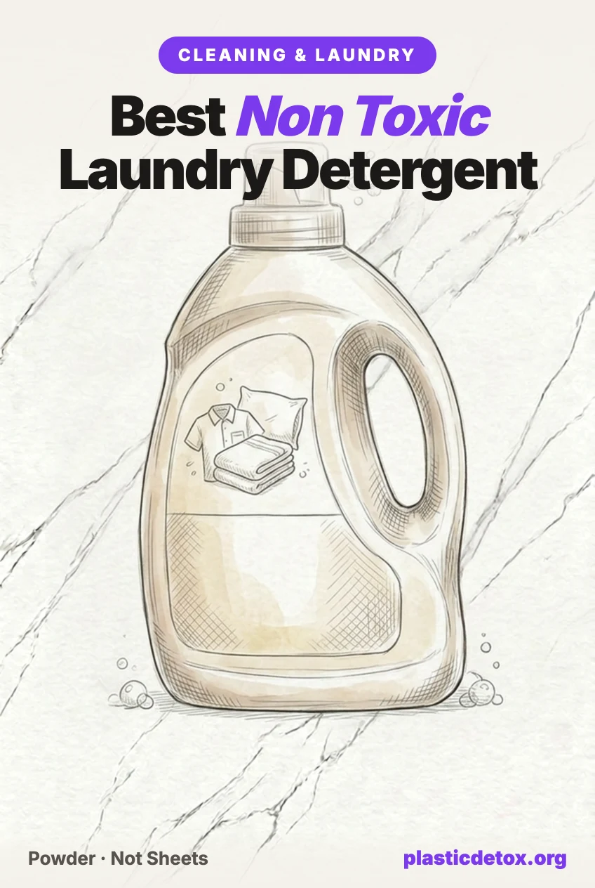

Best Non Toxic Laundry Detergent: The Plastic Free Sheet Problem (2026)

The 30 Second Summary
- The "plastic free" laundry sheet is made of plastic. Sheets and pods use polyvinyl alcohol (PVA), a synthetic polymer made from petroleum feedstock. It dissolves, which is why brands call it plastic free, but dissolving is not degrading. The EPA denied a 2023 petition to force safety testing on it, so the question is open rather than settled.
- Mainstream detergent carries a carcinogen that never appears on the label. 1,4-dioxane forms as a manufacturing byproduct of ethoxylated surfactants. Testing reported through New York's rulemaking found Arm and Hammer Clean Burst at 4.28 ppm and Tide Original at 3.67 ppm, against a state limit of 1 ppm.
- Best overall: Meliora Laundry Powder. MADE SAFE certified, EWG rated A, four ingredients, and the only pick that ships fully plastic free in a paper can with steel ends.
- Best value: Molly's Suds Original Powder, the most reviewed clean detergent on the market at over 23,000 ratings. For tougher loads, their Unscented Super Powder adds enzymes.
- Three of four laundry sheet brands tested positive for PFAS indicators. Mamavation's lab found organic fluorine above 10 ppm in 75 percent of sheets tested, ranging up to 66 ppm. The brands marketed hardest on being planet friendly were not the clean ones.
- Detergent will not stop microfiber shedding. The plastic leaving your machine comes from your clothes, not your soap. That needs a Guppyfriend bag or a machine filter, covered in our clothing and laundry guide.
Why Detergent Is Worth Changing
Laundry detergent is unusual among household products because its residue is designed to stay. Everything else you clean with gets rinsed down a drain. Detergent residue stays in the weave of the fabric that then sits against your skin for the next sixteen hours, across your entire wardrobe, your sheets, and your towels.
That is the case for caring about the formula. It is not a case for panic. The exposure is low dose and dermal, not the kind of acute risk that makes headlines. But it is continuous, it covers a large surface area, and unlike most exposures on this site it is genuinely easy to remove. A detergent swap is one purchase, it costs roughly the same as what you already buy, and it does not require you to change any habit at all.
There are three separate things worth getting right, and most articles on this topic conflate them: what the detergent is made of, what the detergent is packaged in, and what the wash itself releases. They have different answers and different fixes.
The Sheet Problem: PVA Is a Polymer
Laundry detergent sheets have become the default recommendation in the plastic free world. They arrive in a cardboard envelope, they weigh nothing, and they replace a large plastic jug. On packaging alone that is a genuine improvement, and we are not going to pretend otherwise.
The problem is what the sheet itself is. Detergent sheets and detergent pods are both built on polyvinyl alcohol, written on labels as PVA or PVOH. It is a synthetic polymer, manufactured from petroleum feedstock, and it is the film that holds the whole thing together. The sheet is not detergent shaped like paper. It is detergent embedded in a thin plastic film that happens to be water soluble.
Brands describe this as plastic free because the film dissolves. Dissolving and degrading are not the same thing. Sugar dissolves in water and is still sugar. The question that matters is what happens to those polymer chains after they leave your machine, and that question is genuinely unresolved.
What the research actually says
In 2021 Rolsky and Kelkar published a paper estimating that around 17,200 metric tons of PVA are used in laundry detergent pods in the United States each year, and arguing that a large share passes through wastewater treatment without fully degrading, ending up in waterways and in the sludge spread on farmland.
In January 2023, Blueland and the Plastic Pollution Coalition petitioned the EPA to require human health and environmental safety testing for PVA in laundry and dishwasher products, and to remove it from the EPA's Safer Choice program.
The EPA denied that petition in April 2023. Its stated reasoning was that the Rolsky and Kelkar paper modeled emissions rather than measuring them, and that it borrowed degradation rates from studies on different materials, including textile wastewater and starch blends. Industry bodies went further, with the American Cleaning Institute characterizing the petition as a competitive marketing exercise by a brand that does not use PVA.
So where does that leave a person standing in a supermarket aisle? With this: PVA is unambiguously a synthetic polymer, its real world biodegradation depends heavily on the specific treatment plant and the specific grade of PVA, the strongest study arguing it persists was modeled rather than measured, and the federal regulator declined to force the testing that would settle it. Nobody has proven harm. Nobody has proven safety either.
Our position is the same one we take on fabrics marketed as sustainable: when a product's entire pitch is the absence of plastic, the burden is on the product. A powder in a cardboard box does not have this argument at all, costs about the same, and is not waiting on a regulator.
The sheets have a second problem
Mamavation commissioned an EPA certified laboratory to test laundry detergent sheets for organic fluorine, which is used as a marker for PFAS because every PFAS compound is a carbon chain carrying fluorine. The results were poor for a category built on a clean reputation.
| Laundry sheet tested | Organic fluorine | What it means |
|---|---|---|
| Tru Earth Eco Strips, fragrance free | Non detect | Clean on this specific test |
| ECOS Hypoallergenic, Magnolia & Lily | 26 ppm | Above the 10 ppm threshold |
| Force of Nature Planet Friendly | 66 ppm | Highest in the group |
Across the sheets tested, 75 percent came back above 10 parts per million of organic fluorine. The detail worth sitting with is which ones failed. The two brands leaning hardest on hypoallergenic and planet friendly language were the two that tested highest, and the fragrance free option was the one that came back clean. Marketing language is not a test result, which is the same lesson as our clean products that are not clean guide.
1,4-Dioxane, the Ingredient That Is Not on the Label
If you read the back of a bottle of conventional detergent looking for the worst thing in it, you will not find it, because it is not an ingredient. It is a contaminant.
1,4-dioxane is classified as a probable human carcinogen by the EPA. Nobody adds it to detergent. It forms as a byproduct during ethoxylation, a manufacturing step that makes surfactants milder and more soluble. Any surfactant whose name contains "laureth", "pareth", or "ethoxylate" went through that process, and carries some residual dioxane unless the manufacturer takes an extra step to strip it out. Because it is a byproduct rather than an added ingredient, no labeling law requires it to be disclosed.
New York decided to legislate around it. A law signed in 2019 capped 1,4-dioxane in household cleaning products sold in the state at 1 part per million by the end of 2023, and the state finalized regulations in 2024 confirming no waivers would be available from 2026 onward.
Testing commissioned in 2022, which became central to the coverage and litigation that followed, found:
| Detergent | 1,4-dioxane | Against the 1 ppm limit |
|---|---|---|
| Arm & Hammer Clean Burst | 4.28 ppm | More than 4 times over |
| Tide Original | 3.67 ppm | More than 3 times over |
| Gain | 3.32 ppm | More than 3 times over |
| Tide Free & Gentle | 0.31 to 0.4 ppm | Comfortably under |
| Tide PurClean Plant Based | 0.31 to 0.4 ppm | Comfortably under |
Procter & Gamble said it reformulated Tide and Gain to comply before the New York deadline, and there is no reason to doubt that the products on shelves today are different from the ones tested in 2022. But two things follow that are still useful.
First, three separate class actions were filed off the back of these numbers: one against Gain, one against Arm and Hammer Clean Burst, and an earlier 2020 suit alleging Tide PurClean was not as plant based as its name implied. Second, and more usefully, the numbers show you what to look for. The detergents that tested low were the fragrance free and plant based lines from the same manufacturers. The chemistry, not the brand, is what predicts the result.
The reliable rule: a detergent with no ethoxylated surfactant cannot have an ethoxylation byproduct. In practice that means a soap based or mineral based powder, which is what our top picks are.
What Else to Leave on the Shelf
- Optical brighteners. Fluorescent dyes engineered to stay on fabric after rinsing, where they absorb UV light and re-emit it as blue so whites look whiter. They clean nothing. Their whole function depends on staying on the cloth against your skin, and they are a recognized trigger for contact dermatitis. If a detergent promises brighter whites and does not list a bleach, this is usually why.
- Undisclosed fragrance. A single word on a label, "fragrance" or "parfum", can legally stand in for dozens of undisclosed compounds, including phthalates used as scent fixatives. Laundry fragrance is engineered to persist through drying, which is the opposite of what you want from a residue.
- Pods, on two counts. The film is PVA, and the concentrated dose inside has been a persistent child poisoning hazard. If you keep pods, they belong somewhere latched.
- Fabric softener. It works by depositing a cationic surfactant film on fibers, which is residue by design, and it degrades the absorbency of towels while it does so. Wool dryer balls do the mechanical part with nothing left behind.
- "Free and clear" as a guarantee. It signals no added dye or fragrance, which is worth having. It says nothing at all about ethoxylated surfactants or dioxane.
Our Picks
Every pick below was checked on the five things we check: what is in the formula, what it ships in, what independent testing or certification exists, whether the brand faces relevant litigation, and whether it has been recalled. Prices and review counts were current at publication.

Meliora Laundry Powder, Unscented
MADE SAFE certified, EWG rated A, Leaping Bunny certified, from a B Corp manufacturing in Chicago. Formula is sodium bicarbonate, sodium carbonate, and a real vegetable soap of sodium cocoate, glycerin, organic coconut oil and water. No ethoxylated surfactants, no optical brighteners, no fragrance. Packaging is a paper can with steel ends and a stainless steel scoop, fully plastic free, with a refill available. 128 HE loads, roughly 20 cents per HE load. 4.5 stars across about 1,294 ratings.
View →
Molly's Suds Unscented Super Powder
The enzyme formula in the Molly's Suds range, built for heavier soil than the Original can handle. Fragrance free, dye free, quick dissolving across water temperatures, septic safe, minimal suds. No ethoxylated surfactants and no optical brighteners. 60 load pack. 4.6 stars across about 1,232 ratings, the highest rating of the three Molly's Suds powders.
View →
Molly's Suds Original Powder
Four ingredients: sodium carbonate, sodium bicarbonate, magnesium sulfate heptahydrate and unrefined sea salt. EWG rated A, no fillers, no anti caking agents, no optical brighteners, no dyes or fragrance in the unscented version. Developed by a pediatric nurse. 79 ounce bag with scoop, 120 loads. 4.5 stars across about 23,239 ratings, by far the largest review base in this category. Note it contains no surfactant, so it is the weakest option here on oily or greasy stains, and it ships in a bag rather than a box.
View →
Charlie's Soap Laundry Powder, 100 Loads
EPA Safer Choice certified, fragrance free, and the strongest cleaner of the group on hard water and built up residue. Formula is sodium carbonate, C12-16 Pareth-9, C10-14 alcohol ethoxylate and sodium metasilicate. 4.7 stars across about 10,566 ratings, the highest rated detergent here. Read the caveat below: those last two surfactants are ethoxylated, which is the chemistry that generates 1,4-dioxane, and the company states it vacuum strips residues but publishes no test figures.
View →Why Meliora leads and not the most reviewed option
We normally let owner reviews break ties, and on volume alone Molly's Suds Original wins outright with more than twenty times the ratings of Meliora. Two things outweighed that here.
The first is packaging, which on a site about plastic is not a tiebreaker but a criterion. Meliora is the only detergent in this category we found that is genuinely plastic free end to end: a paper can, steel ends, a steel scoop, and a refill designed for it. Molly's Suds ships in a bag.
The second is that Molly's Suds Original contains no surfactant at all. Washing soda, baking soda, Epsom salt and sea salt will soften water, lift odor and handle light soil, and for a lot of households that is genuinely enough. But oily stains need something that can grab oil on one end and water on the other, and none of those four ingredients does that. Meliora's coconut oil soap does, without going anywhere near ethoxylation. If your loads are light, the Original is excellent value. If they are not, you want soap or enzymes.
Washing for a newborn
Any of the fragrance free picks above is appropriate for baby clothes, and there is no need for a separate baby detergent as a rule. If you want an enzyme liquid specifically formulated for milk, formula and blowout stains, Molly's Suds Baby Liquid is EWG Verified, fragrance free, and rated 4.5 stars across about 1,209 ratings, with the honest caveat that it is a liquid in a 50 ounce plastic bottle. Our baby and toddler guide covers the rest of the nursery.
Detergent Cannot Fix Microfiber Shedding
This is the part the category consistently gets wrong, and it matters more than the detergent choice does.
The plastic leaving your washing machine is not coming from your detergent. It is coming from your clothes. A polyester shirt sheds microscopic plastic fiber every wash regardless of what you wash it with, and a premium plant based detergent does not change that by any measurable amount. Switching detergent is a chemistry improvement, not a microplastics intervention.
If reducing fiber shedding is your goal, three things actually work, in order of effect:
- Own fewer synthetic garments. The only intervention that removes the source rather than catching it downstream. Our guide to fabrics marketed as sustainable covers which ones are quietly plastic.
- Wash synthetics in a Guppyfriend bag. A fine mesh bag that captures released fiber so you can bin it instead of flushing it, and reduces shedding in the first place by cutting abrasion between garments.
- Wash cold, wash full, skip the dryer. Lower temperature, less agitation per garment and air drying all reduce mechanical stress on fibers, which is what breaks them.
Full detail on all three, including external machine filters, is in our microplastics in clothing and laundry guide, and the wider wardrobe picture is in closet detox 101.
Brands We Did Not Pick
Charlie's Soap
We included it above because it is EPA Safer Choice certified, fragrance free, exceptionally well reviewed at 4.7 stars, and the best performer in the group on hard water. The caveat belongs in plain sight: C12-16 Pareth-9 and C10-14 alcohol ethoxylate are ethoxylated surfactants, the exact chemistry that produces 1,4-dioxane as a byproduct. Charlie's Soap states its raw materials are vacuum stripped to remove residues, which is the correct process, but we could not find published test results confirming the level. If dioxane is your primary concern, choose one of the three powders above it instead.
Laundry sheets in general, including Earth Breeze and Tru Earth
Sheets genuinely eliminate the plastic jug, they ship light, and for anyone whose priority is packaging waste they are a real improvement on a supermarket bottle. They are not a polymer free product, because the sheet is bound with PVA. Add to that the Mamavation finding that three of four sheet brands tested above 10 ppm of organic fluorine, and the category cannot claim the clean end of this article. We list them in our store with the PVA caveat stated, and we rank powder above them.
Tide, Gain and Arm & Hammer
The 2022 test figures of 3.67 ppm for Tide Original, 3.32 ppm for Gain and 4.28 ppm for Arm and Hammer Clean Burst all sat well above New York's 1 ppm limit, and all three drew class actions alleging the marketing did not match the chemistry. Procter & Gamble states it reformulated before the deadline, and the products sold today are not the ones tested. Our reservation is not that today's bottle is dangerous, it is that the ethoxylated chemistry which created the problem is still the basis of these formulas, and disclosure is still not required. The fragrance free lines from these brands tested far lower than the flagship scented ones.
Anything sold as "plant based" without a certification
Plant based is not a regulated term for cleaning products. A surfactant can begin as coconut oil and still be ethoxylated with a petroleum derived process, which is precisely the argument in the 2020 class action over Tide PurClean. The claim is about feedstock, not about chemistry or safety. MADE SAFE, EWG Verified and EPA Safer Choice are assessments against published criteria. Plant based, on its own, is a picture of a leaf.
Frequently Asked Questions
What is the best non toxic laundry detergent?
Meliora Laundry Powder is our best overall pick. It is MADE SAFE certified, rated A by EWG, and it is the only detergent here that ships fully plastic free, in a paper can with steel ends and a stainless steel scoop. The formula is four things: baking soda, washing soda, real coconut oil soap, and water. Molly's Suds Original Powder is the best value and by far the most reviewed clean detergent, with a four ingredient formula, though it contains no surfactant so it is the weakest option on oily stains. Molly's Suds Unscented Super Powder adds enzymes for tougher loads. Charlie's Soap is the highest rated of the group and the strongest on hard water, but its surfactants are ethoxylated, which is the chemistry that produces 1,4-dioxane as a byproduct.
Are laundry detergent sheets actually plastic free?
No. Laundry sheets and detergent pods are made from polyvinyl alcohol, usually written as PVA or PVOH, which is a synthetic polymer produced from petroleum feedstock. It dissolves in water, which is why brands describe it as plastic free, but dissolving is not the same as degrading. A 2021 paper by Rolsky and Kelkar estimated that roughly 17,200 metric tons of PVA are used in US laundry pods each year and argued much of it survives wastewater treatment. Blueland and the Plastic Pollution Coalition petitioned the EPA in January 2023 to require safety testing and to remove PVA from the Safer Choice program. The EPA denied that petition in April 2023, noting the study modeled emissions rather than measuring them. The honest position is that PVA is a synthetic polymer whose environmental fate is genuinely unresolved, and that powder in a cardboard box avoids the question entirely.
What is 1,4-dioxane in laundry detergent?
1,4-dioxane is a probable human carcinogen that is never added to detergent on purpose. It forms as a byproduct when manufacturers ethoxylate surfactants, a common step that makes cleaning agents gentler and more soluble. Because it is a contaminant rather than an ingredient, it never appears on a label. Testing commissioned in 2022 and reported through New York's regulatory process found Arm and Hammer Clean Burst at 4.28 parts per million and Tide Original at 3.67 parts per million, against a New York limit of 1 part per million that took effect at the end of 2023. Tide Free and Gentle and Tide PurClean tested between 0.31 and 0.4 parts per million. The reliable way to avoid it is to choose a detergent with no ethoxylated surfactants at all, which in practice means soap based or mineral based powders.
Does laundry detergent cause microplastics in clothing?
No, and this is the most common misunderstanding in the category. The microplastic fibers that leave your washing machine come from the clothes themselves, not from the detergent. A polyester shirt sheds plastic fiber whether you wash it with a premium plant based detergent or nothing at all. Changing detergent improves what touches your skin and what leaves your drain chemically, but it does nothing about fiber shedding. For that you need a filter bag such as the Guppyfriend, an external machine filter, or fewer synthetic garments in the wardrobe to begin with.
Are optical brighteners in detergent bad for you?
Optical brighteners are fluorescent dyes designed to stay on fabric after rinsing, where they absorb ultraviolet light and re-emit it as blue so that white fabric looks whiter. They are not a cleaning agent. Their entire function depends on remaining on the cloth that sits against your skin all day, and they are a recognized cause of contact dermatitis in sensitive people. They also pass through wastewater treatment into waterways. None of the detergents we recommend contain them, and any detergent that promises whiter whites without listing a bleach is worth checking.
Is powder or liquid laundry detergent better?
Powder wins on almost every axis that matters here. It ships in cardboard rather than a plastic jug, it is mostly not water so you are not paying to freight water across the country, and it needs no preservative system because bacteria cannot grow in a dry product. Liquid detergent is roughly 60 to 90 percent water, arrives in a plastic bottle, and needs preservatives to stay stable. The genuine advantages of liquid are that it dissolves reliably in cold water and pretreats stains directly. If you wash cold and have hard water, look for a powder that dissolves quickly or dissolve it in warm water first.
Related Articles
- Microplastics in Clothing and Laundry
Where the fiber actually comes from, and the filters and habits that cut shedding. - Sustainable Fabrics That Are Not Sustainable
Bamboo viscose, recycled polyester and the labels that sound green and are plastic. - Reduce Microplastics in Cleaning Products
The plastic hiding in sponges, cloths, pods and single use pads, and what to swap in. - Closet Detox 101
A step by step way to move a wardrobe off synthetic fiber without replacing everything. - Clean Products That Are Not Clean
How natural, non toxic and plant based get used when nothing has been tested. - What Are PFAS?
Where forever chemicals come from, what they do, and how to cut your exposure.